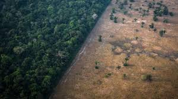

Desmatamento
O desmatamento ou desflorestamento refere-se à eliminação total ou parcial de qualquer tipo de cobertura vegetal. Atualmente, é considerado um dos maiores problemas ambientais.
No Brasil, houve um avanço no desmatamento com a chegada dos portugueses em 1500, os quais exploravam o pau-brasil para venda na Europa.
Contudo, com a Revolução Industrial do século XVIII, o desmatamento mundial alcançou uma aceleração sem precedentes.
O Brasil, assim como outros países tropicais, sofre com elevadas taxas de desmatamento. Entre as causas do desmatamento, destacam-se:
Atividade agrícola e pecuária, responsável por 80% do desmatamento mundial;
Urbanização;
Exploração comercial de madeira, principalmente madeira de lei.
O desmatamento é a atividade humana que mais afeta a Amazônia. A área desmatada já é maior que o território da França.
Para se ter um exemplo da ameaça do desmatamento para a conservação da Amazônia, em 2001, as áreas desmatadas compreendiam 11% da Floresta Amazônica brasileira.
